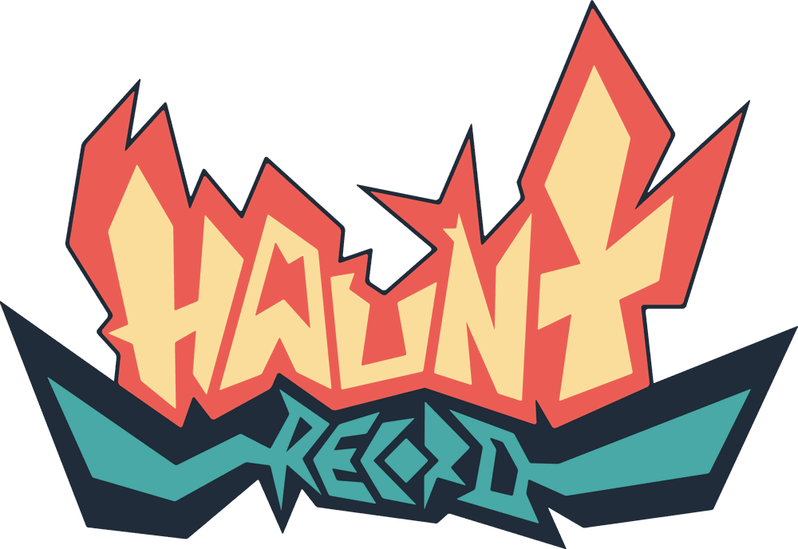
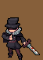
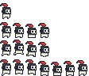
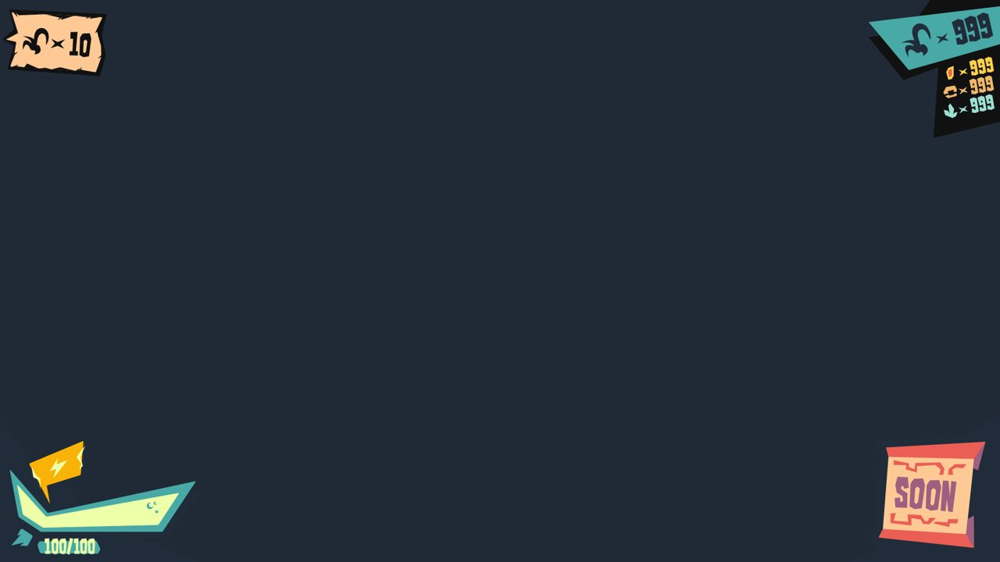
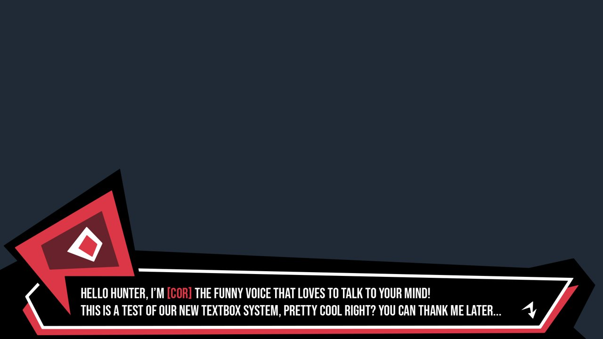
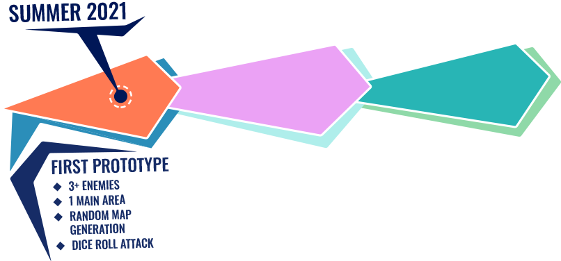
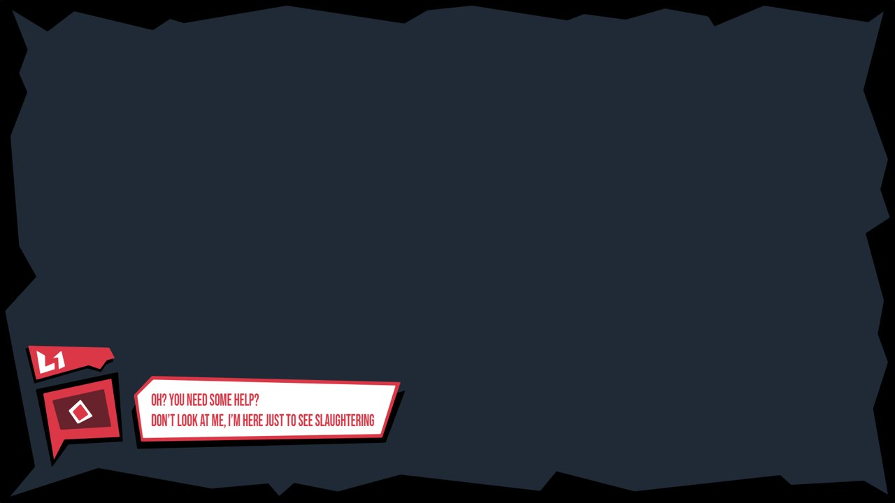
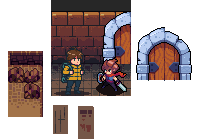

Haunt Record
- Started
- April 2021, first prototype planned for summer 2021
- Genre
- JRPG dungeon crawler, single player, top-down action
- Engine
- Unity 2021.1 (2D)
- My part
- Game design, programming, UI design, game graphics
- Team
- Omar Golinelli, Edoardo Zuliani (game graphics)
- Status
- Archived ?
The licence
You play a Hunter sent into a mysterious dungeon. Your job is to kill a set number of enemies, all of the same species. Do it, and you're given a hunting licence for that species. Collect every licence by the rules, and you can free everyone from the dungeon.
Although something sounds particularly strange.

The streak
The win condition is a streak: defeat a number of enemies in a row without killing anything else in between. The difficulty is as much in sparing as in killing. Some enemies have to be avoided or held off, because killing them breaks the streak.
Reach the threshold and a boss room opens for the species you've been hunting. Beat it, and the licence is yours.
Enemies show no stats, so as you go deeper you never quite know how much stronger they've become. The damage you deal is the only measure you get.

Weak spots
The first time a new enemy attacks, a reticle appears on its weak spot. For a casual player it's a hint about where to hit. For a veteran it's a lesson in how to play perfectly.
Every perfect hit pays off with a bigger visual reward than the damage itself, so every player ends up chasing perfect runs without being told to. Discovered weak spots stay in the bestiary across runs.
- The Boulderfish hides in sandy ground like a bear trap and charges head first. Its head is armoured; its fish body is fragile, exposed only while it charges.
- The Wizarms look like sorcerers with a hand for a face and pretend to be human until they strike. The hand only becomes solid, and hittable, in the moment it attacks.
QUESTION FOR OMARThese enemies are from the GDD. Did any of them get built, or were they only designed?
One run, four players
I designed each run so different players could take it differently. With a 20-kill licence as the example:
- The story player finds the fastest way through to get on with the plot.
- The early achiever tries the easy missions at a harder grade, to see how far the streak can go.
- The collector chases licence grades, up to a gold one that only looks better.
- The hardcore player goes for perfect scores and top grades at once.
A failed perfect run still counts if it was perfect at a lower grade, and the icon for that grade gets a little shinier. You get the push to try again without the pressure of all-or-nothing.

The Mindhaunter
The dungeon is not a dungeon. The researchers call it the Mindhaunter: a mental structure built to wash a host's mind until the host loses their humanity.
The host is Eero, a man who lost everything and agreed to test a "revolutionary game". The one steering him toward the Hero's Journey is you, the player, because your own mind is conditioned to want it too. At some point the host feels it, and the player becomes the enemy that was controlling him.
Every resident of the dungeon carries a curse. The Hunter's is Heroism: he comes back to life every time he dies. Alan, the first person you meet, carries Altruism. He has to set the stage so the hero can shine, which is why he teaches you everything, and why he lets you kill his goat in the tutorial.

QUESTION FOR OMARHow much of the twist do you want on a public page? I wrote it out in full; we can cut it back to "something sounds particularly strange" if you'd rather keep it secret.
The first prototype
The plan was to start small enough for a tiny team, then grow toward the full concept:
- one setting, a rocky cave
- simple movement and a basic attack
- five enemy types with their bosses
- fifteen hand-made floors, served in random order
- an enemy counter, a dialogue box, a start menu and a pause menu
- the prototype's gimmick, the dice-roll attack: a die next to the counters re-rolls after every hit and sets the power of the next one



QUESTION FOR OMARWhat happened to it? Why did it go into the drawer? This is the page where your own words matter most.